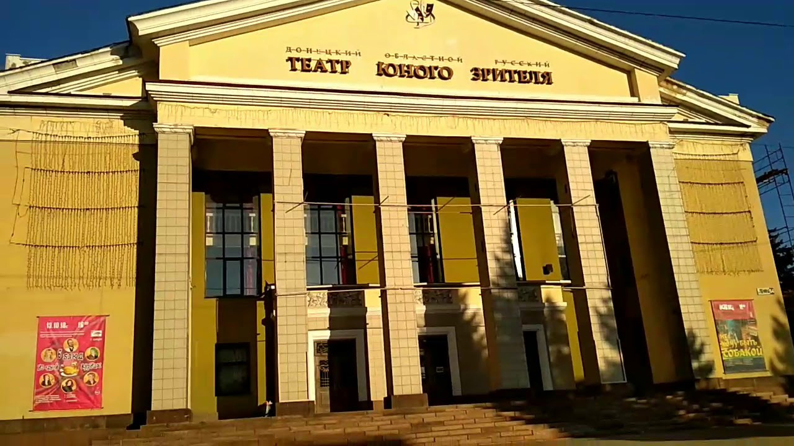

Макеевский художественно-краеведческий музей был основан 20 мая 1958 года. Изначально он относился к Донецкому областному краеведческому музею (был его филиалом). Толчком для открытия музея послужила выставка под названием «Макеевка за сорок лет советской власти». Были собраны большие коллекции, поэтому приняли решение о создании постоянной экспозиции. Руководство города выделило под музей старинное здание. Годом его постройки значится 1912-й. Музей и сегодня располагается в этом здании. В 1995 году Макеевский музей стал отдельным учреждением. Он является ведущим городским многопрофильным учреждением культуры. Фонды музея включают более 30 тысяч различных экспонатов. Экспозиция занимает 5 залов. Гордость музея - этнографическая коллекция, в которую входят изделия, сделанные местными ремесленниками, украинская земледельческая техника, орудия труда, предметы быта, народная одежда и пр. Самое весомое собрание - нумизматическая коллекция, в которую входит около 3 тысяч экспонатов. Они датируются 1600-2000 годами. В Большом выставочном зале постоянно проходят тематические и персональные выставки.
Донецкий республиканский академический театр юного зрителя является одной из достоп Театр находиться в центре города, так что найти его никогда не составляло большого труда. Всегда висит афиша с расписанием спектаклей, которые пройдут в ближайшее время, а с другой стороны всегда можно увидеть какие работы стоит нам ожидать в ближайшем будущем.